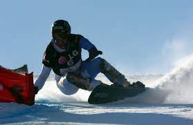
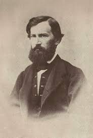

![Винни-Пух]()
Винни-Пух был всегда не прочь немного подкрепиться, в особенности часов в одиннадцать утра, потому что в это время завтрак уже давно окончился, а обед еще и не думал начинаться. И, конечно, он страшно обрадовался, увидев, что Кролик достает чашки и тарелки Винни-Пух был всегда не прочь немного подкрепиться, в особенности часов в одиннадцать утра, потому что в это время завтрак уже давно окончился, а обед еще и не думал начинаться. И, конечно, он страшно обрадовался, увидев, что Кролик достает чашки и тарелки Винни-Пух был всегда не прочь немного подкрепиться, в особенности часов в одиннадцать утра, потому что в это время завтрак уже давно окончился, а обед еще и не думал начинаться. И, конечно, он страшно обрадовался, увидев, что Кролик достает чашки и тарелки Винни-Пух был всегда не прочь немного подкрепиться, в особенности часов в одиннадцать утра, потому что в это время завтрак уже давно окончился, а обед еще и не думал начинаться. И, конечно, он страшно обрадовался, увидев, что Кролик достает чашки и тарелки Винни-Пух был всегда не прочь немного подкрепиться, в особенности часов в одиннадцать утра, потому что в это время завтрак уже давно окончился, а обед еще и не думал начинаться. И, конечно, он страшно обрадовался, увидев, что Кролик достает чашки и тарелки
Изобретение сноуборда относят к началу 1960-х годов. Шерман Поппен из города Маскигон[en], штат Мичиган, придумал и изготовил для своей дочери в 1965 году современное подобие сноуборда, названное снёрфером (snurfer — слово, составленное из двух других — snow («снег») и surf — «сёрф»). Он склеил две лыжи в одно целое. По своей конструкции снёрфер был очень близок к скейтборду, только без колёс. Снёрфер не имел креплений, и чтобы удержаться на доске, катающийся должен был держаться за верёвку, привязанную к носу. Инструкция по пользованию также рекомендовала использовать для катания нескользящую обувь. Уже в 1966 году было начато производство снёрфера в качестве детской игрушки. На протяжении последующих лет росла популярность этого вида спорта. Большой вклад в совершенствование снаряжения внесли такие люди, как Димитрий Милович, Джейк Бёртон (основатель компании Burton Snowboards), Том Симс (основатель компании Sims Snowboards) и Майк Олсон (основатель компании Mervin Manufacturing). Сёрфер с восточного побережья США Димитрий Милович в 1972 году основал компанию Winterstick по выпуску сноубордов, которая уже через 3 года удостоилась упоминания в журнале Ньюсуик. Доски Winterstick наследовали конструкционные принципы от снёрфа и лыж. В 1979 году, неподалёку от города Гранд Рапидс, штат Мичиган, был проведён первый в истории Мировой чемпионат по снёрфингу. В этих соревнования участвовал и Джейк Бёртон, который усовершенствовал снёрфер, добавив крепления для ног. Такое усовершенствование вызвало протест со стороны других участников, так как его снаряд отличался от оригинального. Однако Пол Грейвс, лучший из снёрфингистов того времени, совместно с другими спортсменами, уговорили организаторов допустить его к соревнованиям. В результате был создан отдельный конкурс, в котором Бёртон и победил, будучи единственным участником. Данный чемпионат теперь принято считать первыми в истории соревнованиями по сноуборду, как самостоятельной дисциплине
Константин Дмитриевич Ушинский (1824-1870) родился в Туле, свое детство он провел вблизи Новгорода-Северского, бывш. Черниговской губернии, в небольшом имении родителей. Окончив Новгород-Северскую гимназию, Ушинский поступил в Московский университет на юридический факультет, который блестяще закончил в 1844 году, и через два года, в возрасте 22 лет, был назначен исполняющим обязанности профессора камеральных наук (включавших общее понятие о праве, элементы науки о хозяйстве, финансового права, государственного права) в Ярославском юридическом лицее. Однако уже через два года блестяще начатая профессорская деятельность Ушинского была прервана: в связи с «беспорядками» среди студентов лицея он был уволен из числа профессоров в 1849 году за свои прогрессивные убеждения. Ушинский вынужден был после этого служить мелким чиновником в министерстве внутренних дел, но чиновничья служба не удовлетворяла его. В своих дневниках он отзывался о службе с отвращением. Некоторое удовлетворение давала ему литературная работа в журналах «Современник» и «Библиотека для чтения», где он помещал переводы с английского, рефераты статей, обозрения материалов, опубликованных в иностранных журналах.